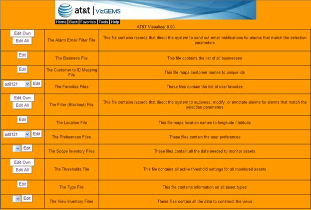

The Configuration Manager is the single interface for all modification and changes to Visualizer inventories and attributes, which is privilege limited based on service level, established by AT&T. Configuration Manager provides AT&T administrators the ability to see and modify all clients’ assets. Please refer to the most recent version of the VizGEMS Config Manager Administrator Guide for more information on how to edit/update these files.

Figure 10-5 Configuration Manager Screen